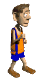

Since July 1992 a quarterly ‘office’ sqwalk has been organised by members from Stoke City Council, colleagues and friends. We must have now completed over 1000 miles. If anyone would like to add up the mileages given in the table below I’d appreciate it.
Please contact me yuppy@squarryclub.github.io for further details of future sqwalks.

{kind=link}
Future possible walks include:-
Foolow to Eyam – Peak District
Green mill Brewery at the Harewood Arms at Broadbottom near glossop recommended by Mark Stefan.
Worcester, including The Mug House at Claines and possibly the Fruiterers Arms at Uphampton.
Stonehouse Brewery and walk at Oswestry
Purple Moose in Porthmadog by Tony and Nails and Portmerrion
Abbots Bromley to Kings Bromley (Royal Oak)
Brewery walk – Eastnor castle and Ledbury to the west, south of Kidderminster
Birmingham canals.
Cycling Monsal Trail Cycle Hire Ashbourne hassopstation.co.uk Take Tissington Trail to Hartington, Royal Oak at Sperklow, climb to Hurdlow and down to Earl Sterndale famous for the Quiet Woman pub (closed?). Then up steep hill, past Jericho farm, then an impressive viaduct near Lovers leap, and into Buxton. Stop at the Palace Hotel Buxton, or The Casa Hotel Chesterfield. Next day the Monsal Trail
click on a link below, where highlighted, for details of previous sqwalks:
| No | Date | Location | Approx. Mileage | Organiser |
| 108 | 28/12/22 | Rudyard | 5.25 | Brolly |
| 107 | 1/7/22 | Bamford, Stannage Edge/Hathersage | 11ish | Yup |
| 106 | 29/12/21 | A wheely long walk – Keele/Silverdale/Apedale | 9 | Yup |
| 105 | 19/5/21 | Spaced out with the bluebells | 11 | Yup |
| 104 | 27/12/19 | Horton’s Short’un – Loggerheads | 6.1 | Mothy |
| 103 | 28/6/19 | The Wirral | 12-15 | Rob |
| 102 | 28/12/18 | Weston Park | 10 | Yup |
| 101 | 1/7/18 | York | 7 | Tone |
| 100 | 25/26/4/18 | Hartington (Click HERE for Spike’s Notes) | 10 & 12 | Yup/DT/Tone |
| 99 | 29/12/17 | Delamere Forest area | 11 or 7 | Yup/Barb |
| 98 | 15/9/17 | Codsall | 12 | Mark Stefano, DT and Hecky |
| 97 | 7/7/17 | Cheltenham to Winchcombe | 11 | Yup/Tone/Nails |
| 96 | 21/4/17 | Buxton to Chapel en le Frith | 10 | Yup |
| 95 | 28/12/16 | Bakewell to Monsal Head | 8-9 | Yup |
| 94 | 2/9/16 | Biggin/Hartington. | 10 | Ali G |
| 93 | 1/7/16 | Chesterfield | 7 | Joe/Yup |
| 92 | 3/6/16 | Hollington | 11 | Heavy |
| 91 | 29/12/15 | Stanley | 9 | Yup |
| 90 | 25/9/15 | Betley, Barthomley and Balterley | 8 | Anytime Tone |
| 89 | 3/7/15 | Conwy | 8-15 | Yup |
| 88 | 17/4/15 | Fradley Junction | 13.5-15 | Yup |
| 87 | 28/12/14 | Market Drayton | 8 | Anytime Tone |
| 86 | 10/10/14 | Ipstones | 11 | Knotty & Boony |
| 85 | 24/6/14 | Bridgnorth | 5.5 | Yup |
| 84 | 2/5/14 | Brummie Twin Peaks | 8.5 | Roadrunner |
| 83 | 30/12/13 | Cannock Chase | 8.5 | Hecky Thump |
| 82 | 11/10/13 | Blythe Bridge | 10 | Knotty |
| 81 | 5/7/13 | Church Stretton to Shrewsbury | 10 | Mr Tahoohigh |
| 80 | 10/5/13 | Weaver Hills | 8 | Yup |
| 79 | 28/12/12 | Hanchurch | 10.5 | Midweek Tone & Yup |
| 78 | 12/10/12 | Stone | 12 | Debris & Dasher |
| 77 | 5/7/12 | Lakes | 11 | Yup |
| 76 | 20/4/12 | Monyash | Chrissy M | |
| 75 | 28/12/11 | Alsagers Bank/Apedale Country Park | 9 | Yup |
| 74 | 9/9/11 | Secret Bunker | 12-13 | Malc Jay |
| 73 | 30/6/11 | Llandudno/Conway | 12 | Dasher |
| 72 | 13/5/11 | Hatton, Tutbury and Sudbury | 12.5 | Midweek Tone & Yup |
| 71 | 27/12/10 | Cromford to Whatstandwell, Derbyshire | 8 | Slippery |
| 70 | 17/9/10 | Matlock | 13 | Granpop Bill |
| 69 | 1/7/10 | Bakewell | 12 | Mr Tahoohigh |
| 68 | 1/4/10 | Malverns | 13 | Yuppy |
| 67 | 29/12/09 | Cannock Chase | 12 | Hecky Thump |
| 66 | 16/10/09 | Telford & Ironbridge | 12 | Yup & Heavy Steve Machine |
| 65 | 9/7/09 | Bishops Castle | 12 | Dasher |
| 64 | 9/4/09 | Hollinsclough, Earl Sterndale, Crowdicote and Longnor | 12 | Heavy Steve Machine |
| 63 | 29/12/08 | Middlewood Way(Macclesfield to Marple) | 11 | Corkster & Yup |
| 62 | 26/9/08 | Rainow | 15 | Keithee’s up for it & Pedro |
| 61 | 19/6/08 | Ludlow | 10 | Mr Tahoohigh |
| 60 | 20/3/08 | Carsington – Biking | loads | Spike & Midweek Tone |
| 59 | 28/12/07 | Keele to Madeley | 11 | Yup, Midweek Tone & Pedro |
| 58 | 7/9/07 | Lathkill Dale | 13.5 | Spikelet |
| 57 | 22/6/07 | The Three Pies of Yorkshire – Photos | Too far | Keithee’s up for it |
| 56 | 20/4/07 | Kinver Edge and Brewery | 12.5 | Thingy & Midweek Tone |
| 55 | 28/12/06 | Stafford Castle and The Ring | 12 | Sparklette & Thingy |
| 54 | 13/10/06 | Himley | 15 | Mark Steffan & Yup |
| 53 | 29/6/06 | Rutland | 23 on bikes | Mr Tahoohigh |
| 52 | 13/4/06 | Spring Roll – Alderley Edge | 12.5 | Jacko |
| 51 | 28/12/05 | Cheddleton – Photos | 12 | Granpop Bill, Stubby & Dasher |
| 50 | 8/9/05 | Old Hooky – Chipping Norton | 18 | Mr Tahoohigh |
| 49 | 16/6/05 | Midsummer Madness Llangollen (Photo gallery) | 13.5 | Midweek Tone |
| 48 | 23/3/05 | To Strike or Not to Strike Hartington | 13 | Nige (No-el), Chrisy M & Yup |
| 47 | 28/12/04 | Joe’s well organised walk Bignal End | 9.6 | Mr Tahoohigh |
| 46 | 24/9/04 | Sandstone Trail | 14.5 | Jacko |
| 45 | 21/8/04 | Rochdale (See walk 36) | 16 | Mo Who |
| 44 | 22/4/04 | Hadrian’s Wall | 15 + 9 | Keithees up for it |
| 43 | 28/12/03 | Hanchurch Woods (Sausage and Stone) (see walk 31) | 15 | Spikelet |
| 42 | 18/10/03 | Blithfield Resevoir / Abbots Bromley | 13 | Yup |
| 41 | 20/6/03 | Bala – Raft n Hike by Spike (see walk 33) | 7.5 | Spikelet |
| 40 | 17/4/03 | Severn Valley Walk Bridgnorth to Arley Click here for photos | 13 | Sparklet |
| 39 | 29/12/02 | Rode Heath/Mow Cop (Rising Sun/Bleeding Wolf/Broughton Arms) | 19k | Mid week Tone |
| 38 | 18/10/02 | Church Stretton | 12.5 | Spikelet |
| 37 | 21/6/02 | 10yr Anniversary Walk (see walk 1) | 26 | – |
| 36 | 28/3/02 | Rochdale | 16 | Mo Who |
| 35 | 27/12/01 | Norbury Millenium Boulder Trail Staffs Borough territory | 10-12 | Thingy |
| 34 | 26-28/9/01 | The Arden Way | 17 | Pedro |
| 33 | 13/7/01 | Bala – Raft n Hike | 7.5 | Spikelet |
| 32 | 12/4/2001 | A Taste of the Potteries | 10 | Mid week Tone |
| 31 | 28/12/2000 | Hanchurch Woods, Tittensor Chase, Barlaston Downs | 15 | Yup |
| 30 | 13/10/2000 | Eyam Click here to see Joe tinkling the ivories at The Barrel Inn at Bretton. | 12 | Spikelet |
| 29 | 12/5/2000 | Bluebells and Booze – Apedale, Bignall End | 14 | Mr Tahoohigh |
| 28 | 7/4/2000 | Malham Cove, Yorkshire Dales | 13 | Spikelet |
| 27 | 29/12/99 | Rudyard, Knypersley Reservoir | 14.5 | Nige (No-el) |
| 26 | 17/9/99 | Congleton – Brereton Park, Swettenham | 11 | Jacko |
| 25 | 9/7/99 | Wye Walk Canoe/Walk | 5/9 | Sparklet |
| 24 | 1/4/99 | Wildboarclough – (Cat & Fiddle), Shining Tor, Shuttingsloe | 15 | Nige (No-el) |
| 23 | 29/12/98 | Tittesworth Resevoir / Roaches (Lazy Trout) | 13 | Mr T & Scotty |
| 22 | 8&9/10/98 | Scafell Pike | 11.7 | Spikelet |
| 21 | 10/7/98 | Copmere / Norbury Junction | 17.7 | Yup |
| 20 | 9/4/98 | Hollinsclough / Longnor (Quiet Woman) | 14 | Mr T & Jacko |
| 19 | 29/12/97 | Froghall / Coombes Valley | 15 | Nige (No-el) |
| 18 | 17/10/97 | Parsley Hay Bike/Walk | 18 on bike 8 walking | Spikelet |
| 17 | 13/6/97 | Brewood / Wheaton Aston | 16 | Mothy |
| 16 | 27/3/97 | Baslow Froggat Edge | 17.5 | Nige (No-el) |
| 15 | 30/12/96 | Biddulph / Congleton Edge / Cloud | 13 | Chris T |
| 14 | 11/10/96 | Ashley and Maer Hills | 16.4 | Mid week Tone |
| 13 | 12/7/96 | Weston / Tixall / Salt / Shugborough / Sandon | 18 | Heavy Steam Machin |
| 12 | 4/4/96 | Alton Towers | 16 | Spikelet |
| 11 | Xmas 95 | Rudyard / Gun Hill (Rushton Inn?) | 15 | Nige (No-el) |
| 10 | 12/7/95 | Hope Valley / Mam Tor (The George at Hathersage) | 17 | Jay P |
| 9 | 13/4/95 | Roaches 3 Shires Head (The Crag Inn at Wilboarclough, The Rose & Crown, The Ship @ Danebridge | 17 | Scotty |
| 8 | 29/12/94 | Haddon Hall | 15 | Mr T |
| 7 | 2/9/94 | Wetton / Alstonefield /Hartington / Warslow / Butterton | 17 | ? |
| 6 | 31/3/94 | Hulme End – Chrome Hill Earl Sterndale (4 only) | 20 | ? |
| 5 | 30/12/93 | Manifold & Dove valleys (Hulme End) (Cavelier @ Grindon and the Black Lion @ Butterton) | 18 | Nige (No-el) |
| 4 | 20/7/93 | Miller’s Dale (Mr Blobby) | 18 | Scotty |
| 3 | Easter 93 | Macclesfield Forest ? (Walkers Barn Leather Smithy) | 19 | Jacko |
| 2 | Xmas 92 | Monyash ? Silly Dale? (Lathkill Hotel) | 11.5 | ? |
| 1 | 27/7/92 | Butterton (Packhorse @ Crowdecote, Devonshire Arms @ Hartington and the George at Alstonefield) (see walk 37) | 26 | DT |